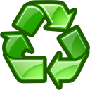
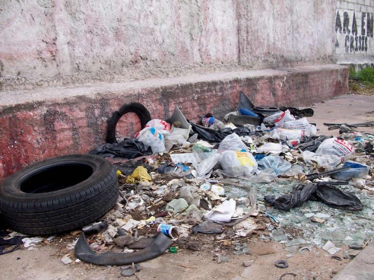
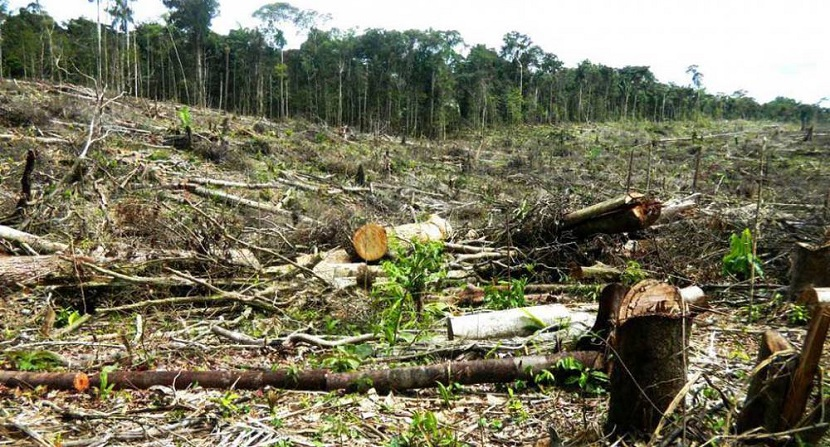
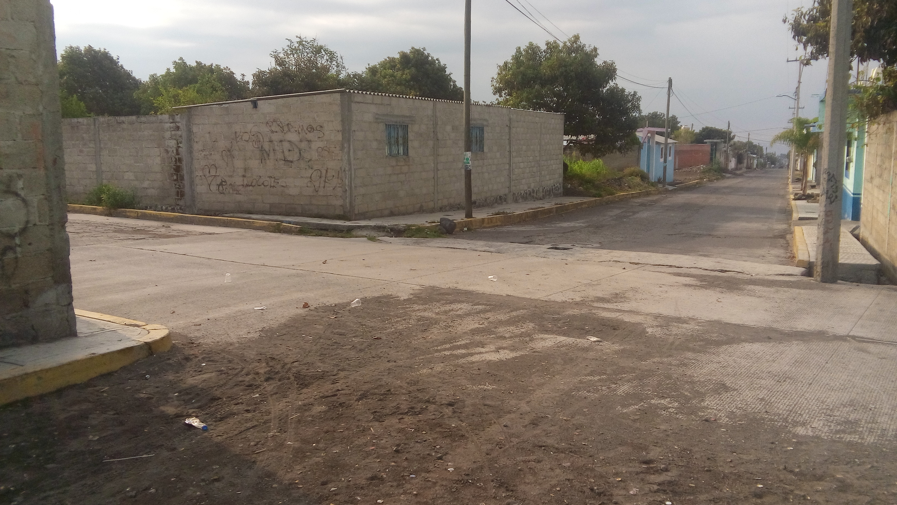

Contaminación ambiental
Contaminación ambiental:
Esta es una imagen de contaminación:
Contaminación:
Esta es una imagen de contaminación:

Aplicación Cuatro
Maria Ignacia Postrero Santos
Definicion
La contaminación es la introducción de un agente contaminante, que puede ser líquido, sólido o gaseoso, y que por sus características químicas, cuando se adentra en un medio natural, causa su inestabilidad y daña el funcionamiento del ecosistema. De esta manera se afecta conllevando riesgos para los seres vivos que residen en él.
La contaminación ambiental es la integración desfavorable y la incorporación de cuerpos y sustancias cuyo material e ingredientes, afectan las condiciones naturales de un medio, esto cuando ocurre el período de descomposición del elemento lleva a la propagación y producción de sustancias y olores que pueden afectar la salud y el bienestar de la comunidad gravemente.
Tipos de contaminación
Existen muchos tipos de contaminación ambiental y agentes contaminantes que están alterando y destruyendo la calidad de los principales elementos naturales renovables como el aire, agua, suelo, flora y fauna.
Los principales son:
Contaminación del aire o atmosférica:
Producto de los gases de efecto invernadero y los combustibles fósiles que transforman la calidad del aire y la atmósfera del planeta.
Contaminación del agua:
Producto de actividades domésticas, industriales, agrícolas, agropecuarias, mineras, económicas, sociales y ambientales que alteran la calidad de los cuerpos de aguas del planeta por desechos sólidos y sustancias liquidas.
Contaminación del suelo:
Producto de actividades humanas que por residuos sólidos y sustancias químicas degradan la productividad y fertilidad del recurso suelo o tierra.

Contaminación de la flora y fauna:
Producto de la contaminación del aire, agua y suelo que causan la muerte de especies animales y vegetales como la diversidad biológica del planeta.

Contaminación acústica o sonora:
Causada por cualquier ruido excesivo en un entorno determinado que perturba la tranquilidad y armonía de vivir en paz.
Contaminación radiactiva o nuclear:
Producto por sustancias radiactivas y nucleares que alteran y destruyen el medio ambiente.
 Contaminación química:
Contaminación química:
Producto de agentes o sustancias químicas que impactan sobre los seres vivos y el ambiente.
Contaminación lumínica:
Causada por la excesiva cantidad de luces artificiales nocturnas.
Contaminación visual:
Causada por la cantidad de letreros publicitarios que impiden la visibilidad de cualquier objeto en un lugar determinado.
 Contaminación térmica:
Contaminación térmica:
Causada por la alta o baja temperatura que altera la calidad del aire y el agua.

Consecuencias
Las consecuencias de la contaminación ambiental afectan gravemente la salud humana, la salud animal, los bosques y vegetación, y el ambiente en general.
Aumento del polen
Esto tiene como resultado el incremento de alergias desenfrenadas, ataques de asma y problemas respiratorios a lo largo del mundo, afectando a la salud de billones de personas.
Aumento de enfermedades de transmisión por el agua
La contaminación del agua es la causa principal de varias enfermedades de transmisión acuática.
Pérdida de la biodiversidad
Cientos de seres vivos y plantas han sido extinguidos de la Tierra porque la contaminación de su ambiente hizo imposible su existencia en el planeta.
 Problemas de salud en los humanos
Problemas de salud en los humanos
Los contaminantes del suelo también pueden causar enfermedades de la piel, desórdenes del sistema nervioso central y bloqueo muscular.
Efectos negativos en el crecimiento de las plantas
La contaminación del suelo causa que grandes extensiones de tierra se conviertan en escenarios peligrosos para la salud; dicha tierra no puede soportar la mayoría de las formas de vida.
Calentamiento global
La emisión de los gases invernadero, particularmente de dióxido de carbono (CO2), está incrementando el calentamiento global.

Más consecuencias...
Reciclaje
El reciclaje consiste en obtener una nueva materia prima o producto, mediante un proceso fisicoquímico o mecánico, a partir de productos y materiales ya en desuso o utilizado. De esta forma, conseguimos alargar el ciclo de vida de un producto, ahorrando materiales y beneficiando al medio ambiente al generar menos residuos. El reciclaje surge no sólo para eliminar residuos, sino para hacer frente al agotamiento de los recursos naturales del planeta.
Estrategia de tratamiento de residuos:
El reciclaje, al margen de su complejo proceso de transformación, es uno de los puntos básicos de estrategia de tratamiento de residuos 3R.
Reducir:
Acciones para reducir la producción de objetos susceptibles de convertirse en residuos.
Reutilizar:
Acciones que permiten el volver a usar un producto para darle una segunda vida, con el mismo uso u otro diferente.
Reciclar:
El conjunto de operaciones de recogida y tratamiento de residuos que permiten reintroducirlos en un ciclo de vida.
Colores del reciclaje:
Aprende a diferenciar los diferentes contenedores de reciclaje por colores, un código universal muy sencillo que ayudará a que recicles mejor materiales como el plástico, papel, materia orgánica o desechos peligrosos.
Medidas para combatirla en mi comunidad
5 Medidas.
Pedirle al presidente que compre botes para depositar la basura
Organizar grupos para vigilar que no pinten las paredes
Multar al que tire y queme basura
Controlar el uso de fertilizantes y pesticidas.
Las personas que salgan a pasear a sus mascotas, limpien su suciedad
Colocar letreros que digan NO TIRAR BASURA



 1
1 6
6 8
8